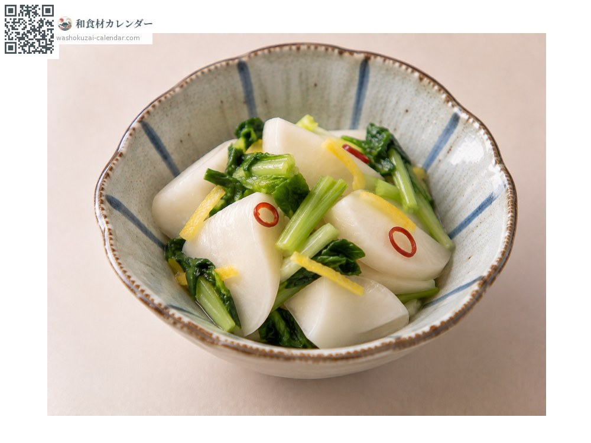
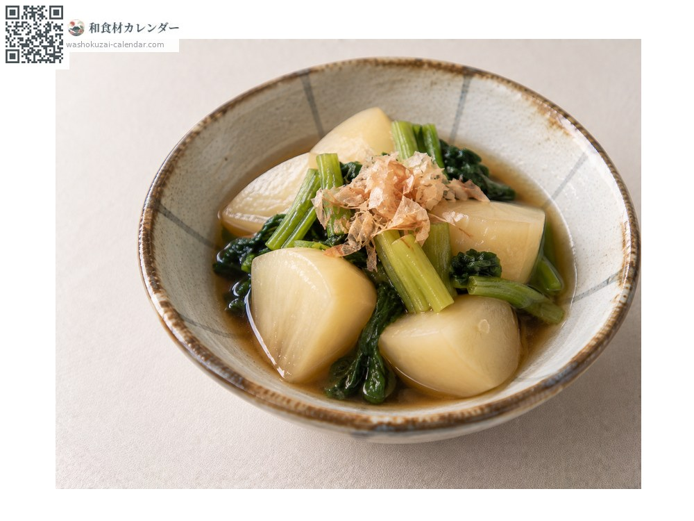
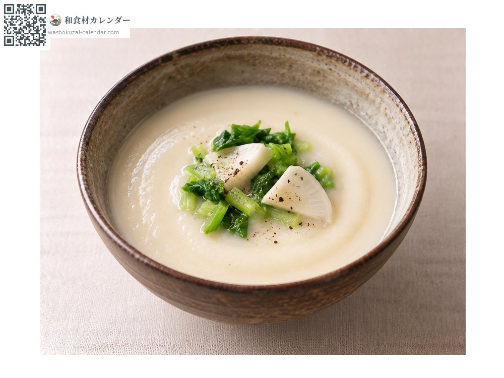
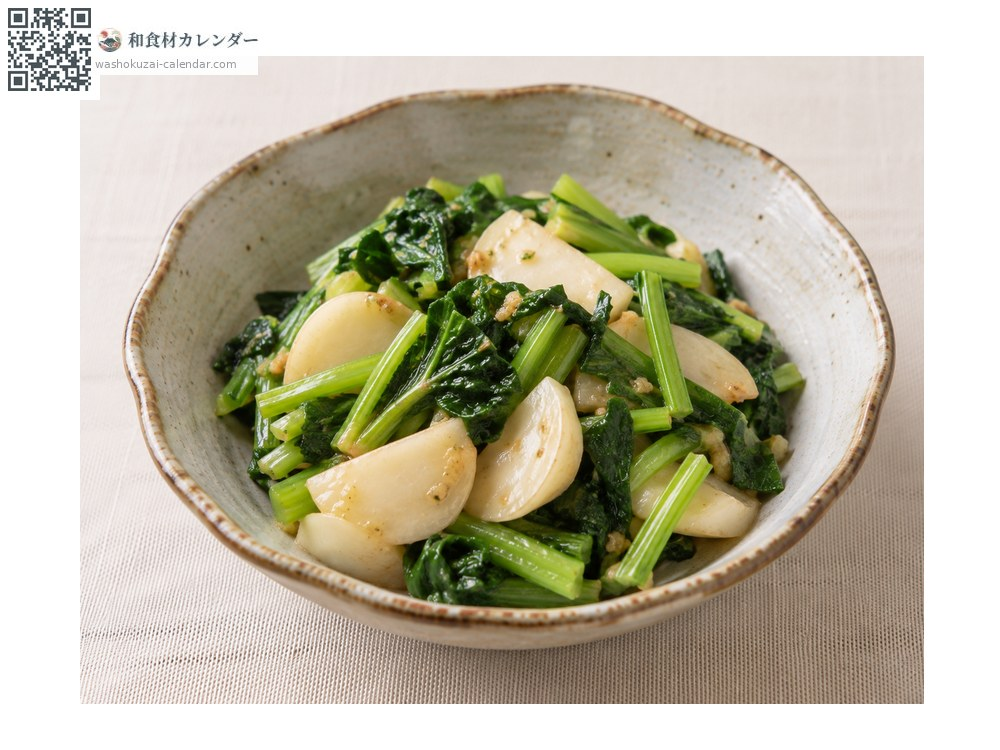

Vegetables
Turnip
カブ かぶ
At its best in Jan, Feb, Oct, Nov, Dec

When it is at its best
Jan
Feb
Mar
Apr
May
Jun
Jul
Aug
Sep
Oct
Nov
Dec
In seasonAvailable
How to cook

Asazuke (lightly salted quick pickles)
Sliced thin and rubbed with salt.

Nimono (simmered in dashi)
Simmered in dashi until tender.

Puréed soup
Puréed and strained.

Stir-fried turnip greens
The leaves are edible too.
How to choose
A white, glossy root without cracks, and lively leaves.
Storage
Cut the leaves off and store them separately, or the root loses moisture.
Main areas
Good to know
The leaves are more nutritious than the root. Many heirloom varieties exist, such as Shogoin kabu in Kyoto and Hino-na kabu in Shiga.
At their best around the same time
 Butterbur sprout
Butterbur sprout Rapeseed blossom
Rapeseed blossom Japanese parsley
Japanese parsley Cabbage
Cabbage Napa cabbage
Napa cabbage Brussels sprouts
Brussels sprouts Broccoli
Broccoli Cauliflower
Cauliflower